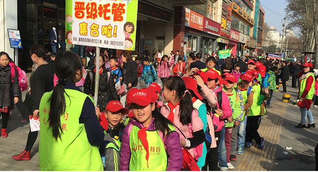
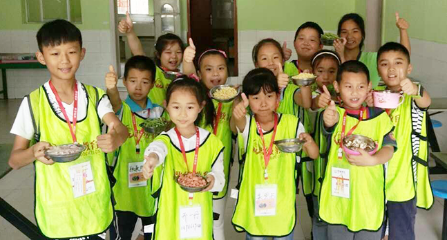

进入21世纪后，中国教育培训业新兴了一个行业产品——品牌学生托管。在众多学生托管机构中，北京晋级爱之家国际文化传播有限公司旗下的“晋级托管”，横空出世，姨妈当先，历史十二年，成为中国学生托管的开创品牌！
晋级托管针对“中国的城镇孩子放学后怎么办”这个大问题，围绕“中国城镇的有些父母管不了放学后的孩子怎么办”做文章，金鼎八大需求群体，提供放心服务。晋级，为蜗居在居民单元楼的孩子们提供游乐空间；晋级，为缺乏玩伴的独生子女提供玩伴；晋级，为作业繁重的孩子们缩短作业时间并提高作业质量；晋级，为产生“独生子女病”的孩子们纠正不良习惯和劣质性格；晋级，为深受应试教育熏陶的孩子们提高非智力素质。这就是“晋级托管”的诞生理念，服务理念，经营理念！
学生托管管什么？这是所有托管机构在把托管服务有低端做向高端必须回答和实践的根本性课题。晋级在全国同行业的品牌机构中，独特性地把托管服务开拓拓展至“六管”，即：管安全、管学习、管娱乐、管生活、管品行、管健康，并由此形成了自己的品牌特色。晋级“六管”模式的建立和实施，宣告着学生托管进入品牌时代。面对“小饭桌”的不规范、不卫生、不标准和不专业，学生家长们注定只会选择品牌托管。
选择晋级托管，孩子进步家长心安；携手晋级托管，共同打造美好明天！